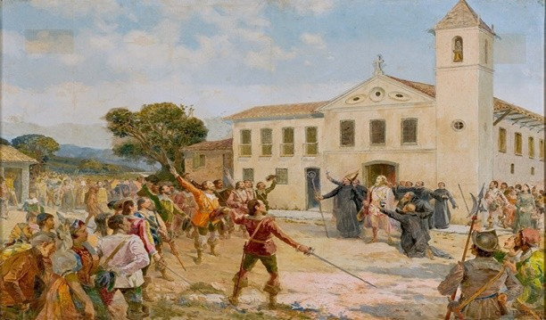

Invasão Holandesa na Bahia (1624-1625)
-No início do século 17, Salvador era uma das mais importantes cidades da América, a capital do Brasil, um estado português controlado por espanhóis, durante a União Ibérica (1580-1640). A primeira tentativa holandesa de conquistar Salvador ocorreu em dezembro de 1599, quando o almirante van Leynssen enviou sete navios ao Brasil, comandados pelos capitães Hartman e Broer. Os ataques na Baía de Todos os Santos duraram quase dois meses. Os holandeses afundaram várias embarcações portuguesas e pilharam engenhos no Recôncavo. Mas fracassaram no objetivo de conquistar a Cidade. Nos anos seguintes, os piratas holandeses continuaram atacando navios espanhóis e portugueses em alto mar, tanto no Atlântico, quanto no Oceano Índico. Em 1604, tentaram novamente conquistar Salvador, dessa vez com uma esquadra de seis navios comandada por Paulus van Caerden. O ataque foi similar ao primeiro e o resultado, o mesmo fracasso. Nos anos seguintes, dezenas de navios, com cargas do Brasil, foram atacados pelos holandeses. Em 1621, os holandeses fundaram a Companhia das Índias Ocidentais (West-Indische Compagnie), uma empresa patrocinado pelo governo holandês, com a participação de investidores privados e que buscava principalmente a exploração comercial da América. A conquista de Salvador pelos holandeses foi um dos mais importantes eventos do mundo ocorridos na primeira metade do século 17. Tinha relação com o domínio comercial do Atlântico. Naquela época, a Cidade do Salvador era de importância estratégica no comércio mundial. Sua importância é atestada pela bibliografia internacional daqueles tempos, quando a conquista de Salvador aparece em destaque. A iconografia do evento também é muito rica e aparece em muitos livros ingleses, franceses, espanhóis, portugueses e holandeses publicados naquele século. No século 16, Portugal mantinha boas relações comerciais com os holandeses, mas esse quadro mudou com a União Ibérica em 1580. Em 1579, as províncias do norte dos Países Baixos formaram a União de Utrecht, rompendo com Espanha. Em 1581, declararam formalmente sua independência. A Espanha, entretanto, só reconheceu a independência em 1648. Prejudicada em seus negócios no Atlântico pelo domínio espanhol sobre Portugal, a Companhia das Índias Ocidentais invadiu a cidade de Salvador. Em 09 de maio de 1624, uma esquadra de 26 navios e cerca de 3.400 holandeses comandados Jacob Willekens, chegaram a Bahia. Salvador foi fortemente bombardeada pelos holandeses, com muitos prejuízos para a Cidade. Aportaram na Barra. Após alvejar os canhões da Ponta do Padrão, os holandeses seguiram para o centro da Cidade. O Governador do Brasil Diogo de Mendonça Furtado foi aprisionado na Casa do Governo, onde assinou sua rendição em 10 de maio de 1624. Foi levado prisioneiro para a Holanda, junto com seu filho, e libertado em 1626. O Bispo D. Marcos Teixeira de Mendonça e o Clero Secular da Diocese de São Salvador da Bahia refugiaram-se em Abrantes (atual distrito de Camaçari). As igrejas de Salvador foram profanadas e muito danificadas pelos invasores. Em 27 de março de 1625, Salvador foi retomada por uma armada luso-espanhola de mais de 50 navios, comandada pelo almirante espanhol Fadrique de Toledo y Osorio. Foram mais de 40 dias de batalha e, em 1º de maio, houve a primeira rendição. Na impossibilidade de dominar a capital do Brasil, os holandeses estabeleceram-se em Pernambuco, em 1630, e estenderam seus domínios por grande parte do Nordeste
Por que os holandeses invadiram o Brasil?
"A invasão do Nordeste brasileiro pelos holandeses resultou diretamente das relações diplomáticas entre Portugal, Espanha e Holanda no final do século XVI. Até 1580, a Holanda tinha um envolvimento direto com o negócio do açúcar produzido no Brasil, pois foram eles que financiaram o desenvolvimento do negócio aqui e eles também participavam do refino e da comercialização do açúcar na Europa. A atividade açucareira rendeu bastante lucro para Portugal e Holanda. No entanto, essa situação sofreu profundas modificações com a crise da dinastia de Avis em Portugal, no final do século XVI. Essa crise de sucessão deflagrou-se quando d. Henrique, rei de Portugal, morreu e não deixou herdeiros diretos. Assim sendo, uma disputa aconteceu e resultou na coroação de Filipe II, da Espanha, como rei de Portugal. Como desdobramento, as coroas de Espanha e Portugal foram unificadas sob o domínio do mesmo rei. Isso ficou conhecido como União Ibérica e representava, naturalmente, que mudanças drásticas aconteceriam nas relações diplomáticas entre Holanda e Portugal, pois a Holanda estava em guerra contra a Espanha desde 1568. Não pare agora... Tem mais depois da publicidade ;)"
"Essa guerra entre Espanha e Holanda tinha relação com a luta dos holandeses por sua independência (até 1581, a Holanda estava sob o domínio dos Habsburgo, a dinastia que reinava na Espanha). Por conta desse contexto, os inimigos da Espanha tornaram-se os inimigos de Portugal, já que os dois países passaram a ser governados pelo mesmo rei. Assim, os holandeses acabaram sendo excluídos do negócio do açúcar e isso resultou em uma ação dos holandeses contra Portugal. Em 1595, os holandeses saquearam portos portugueses no continente africano e, em 1604, atacaram a cidade de Salvador, na Bahia, mas o ataque dos holandeses acabou fracassando. Depois disso, os holandeses permaneceram em trégua com os espanhóis até 1621."
Invasão do Nordeste
"A trégua da Holanda com a Espanha encerrou-se em 1621 e, no mesmo ano, a Companhia das Índias Ocidentais (West-Indische Compagnie, em holandês) foi fundada. Esses acontecimentos fizeram com que a guerra fosse retomada. A WIC (sigla da companhia no holandês) tinha como objetivo tomar o controle dos locais produtores de açúcar de Portugal, bem como dos postos de comércios de escravos na África. Em 1624, veio o primeiro grande ataque dos holandeses contra a capital do Brasil, a cidade de Salvador, e eles a conquistaram após 24 horas de batalha. O domínio dos holandeses concentrou-se nos limites da cidade, uma vez que a resistência dos colonos e dos portugueses não permitiu que os holandeses se expandissem pelo Recôncavo Baiano.
 Com a invasão dos Holandeses , Mauricios de Nassau foi indicado para Administrar a colônia Holandesa no Nordeste
Com a invasão dos Holandeses , Mauricios de Nassau foi indicado para Administrar a colônia Holandesa no Nordeste
"Entre 1630 e 1637, os holandeses estenderam o seu domínio pelo Nordeste brasileiro e conquistaram regiões como a Paraíba e o Rio Grande do Norte. Para isso, contaram com a preciosa ajuda de um colono chamado Domingo Fernandes Calabar. O conhecimento que ele tinha da terra foi crucial para o sucesso dos holandeses. A partir de 1637, foi enviado pela WIC o alemão Maurício de Nassau para administrar a colônia holandesa. Ele era um militar e foi indicado para assumir o cargo e aqui permaneceu até 1643. A administração de Nassau foi um momento importante para o estabelecimento dos holandeses no Brasil. Maurício de Nassau realizou inúmeras ações para o desenvolvimento da colônia. Ele procurou recuperar a economia açucareira de Pernambuco ao vender engenhos que tinham sido abandonados durante a guerra entre portugueses e holandeses e procurou estabelecer algumas normas para a melhoria da vida, como a obrigatoriedade de se plantar mandioca, proibição de se jogar lixo nas ruas, entre outras medidas." Veja mais sobre "Invasões holandesas no Brasil" em: https://brasilescola.uol.com.br/historiab/invasoes-holandesas-no-brasil.htm